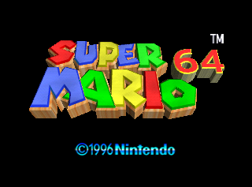

Super Mario 64
This article must comply with the non-Pokémon glitches guideline.
| Super Mario 64 | |
|  | |
| Wikipedia link | Super Mario 64 |
| Developer(s) | Nintendo |
| Publisher(s) | Nintendo |
| Platform(s) | Nintendo 64 |
| Release date(s) | June 23, 1996 (Japan) September 26, 1996 (North America) March 1, 1997 (Europe, Australasia), November 17, 2003 (China, iQue Player version) |
Super Mario 64 is a platform game for the Nintendo 64, in which Mario travels in a 3D environment through many different worlds to collect special stars, known as Power Stars on a journey to defeat Bowser and rescue Princess Peach.
It was very successful, and it also has its own community of glitch enthusiasts.
Below are just some of the glitches in this game:
Contents
Backwards long-jumping
A highly infamous Super Mario 64 glitch, which was patched in the iQue Player version (a special version released in China). If Mario continuously performs long jumps backwards, he can accumulate speed, which can be abused for sequence breaking, such as bypassing the endless stairs with less than 70 Power Stars. There are also techniques (in combination with the MIPS glitch) for completing Super Mario 64 with 16 Power Stars, 1 Power Star and (as was eventually discovered) 0 Power Stars at all.
MIPS glitch
By positioning MIPS in front of a door while facing the right-side of the door and letting go, it is possible to move MIPS between rooms.[elaboration needed] It is possible to bypass the 30 star star door this way and access Dire, Dire Docks as well as Bowser in the Fire Sea early.
| |
Wet-Dry World Chuckya transform exploit
A glitch in which Chuckya is brought into Wet-Dry World's downtown area. By leaving and re-entering this location while holding the Chuckya, it is possible to make it appear as different objects.
Step 1:
Locate the Chuckya in the image below:
Step 2:
Grab the Chuckya and bring it to the edge, then attempt to jump and drop the Chuckya off the edge.
Step 3:
Make it so that Mario falls in front of the Chuckya, and is grabbed and then thrown around.
Step 4:
Use the object here to raise the water and sink the Chuckya
Step 5:
Grab Chuckya while it is underwater
Step 6:
Move Mario and Chuckya to the position below. Now jump on to the sloped wall while holding Down+Right. After Mario lands on top of it, hold Right. If done correctly, Mario will slide over to the area surrounded by fencing which leads to Wet-Dry World 'downtown'.
Step 7:
Go to 'downtown' while still carrying Chuckya. Now after going back out of the 'downtown' load-zone and back in it, the graphics of the Chuckya may change into another object, such as a cannon.
| |
More glitches
Many more glitches for this game are demonstrated on YouTube. In particular, a Super Mario 64 glitcher known as pannenkoek2012 is well known for thoroughly covering Super Mario 64 glitches, challenges (such as no A-Button challenge) and curiosities.
Relevant links
- pannenkoek2012's main YouTube account
- pannenkoek2012's other YouTube account (UncommentatedPannen)
- Super Mario Wiki list of glitches in Super Mario 64
See also
- Super Mario 64 DS: Nintendo DS enhanced remake
| This article or section is a stub. You can help Glitch City Wiki wiki by expanding it. |